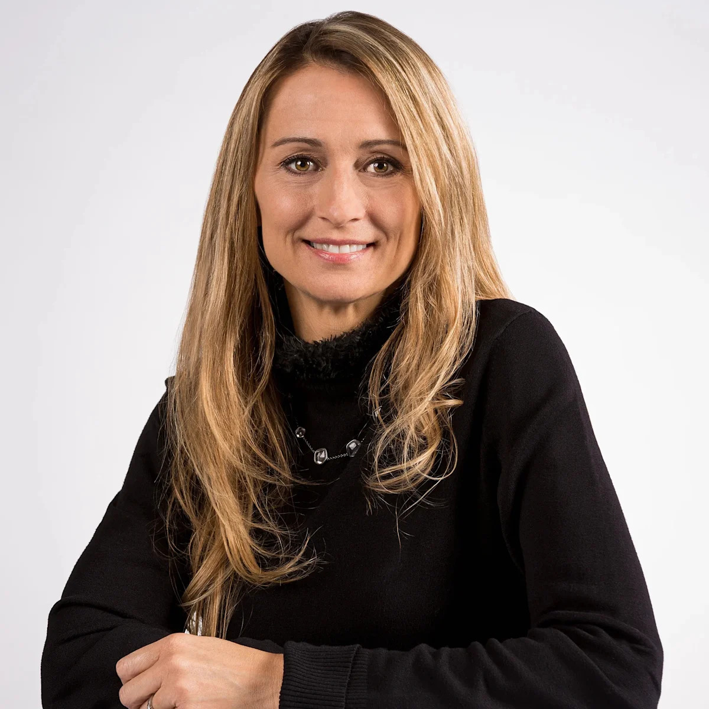

📰💡 投資博客
5 條 魔術師的伊謝爾倫日記
魔術師的伊謝爾倫日記
X 檔案（十八）
博客轉載有線新聞報道：香港首個成人展邀請約 28 名日本女優參加，開幕前突然宣布取消，有買票市民擔心退款不順利；有立法會議員認為個別事件無損「盛事之都」形象。
💡
阿B講股
阿B講股
領展房託 業績中規中矩
領展交出一份中規中矩的中期業績，可分派總額 32.95 億元，增加 0.4%，每基金單位分派 1.2725 元；股價逆市升 3.2%，相對阿里挫逾 6.75%、長和跌近 4% 顯得硬淨。
💡
Stockresearch18
Stockresearch18
英偉達行政總裁黃仁勳辭職
轉載英偉達董事會聲明：黃仁勳辭去行政總裁一職，財務長 Colette Kress 出任臨時行政總裁，Harvey Jones 當選公司首任董事會主席，董事會讚揚黃仁勳對公司的貢獻極為深遠。
💡
財務自由人
財務自由人
輝達宣布黃仁勳辭任總裁、執行長及董事 即刻生效
輝達董事會宣布黃仁勳辭任所有職務即刻生效，財務長克雷斯暫代行政總裁並繼續兼任財務長；消息公布後輝達盤前股價一度重挫逾 10%，市場反應劇烈。
💡
Stockresearch18
Stockresearch18
領展 26-27 年上半年業績
領展上半年每基金單位分派 1.2725 元，按年增加 0.29%；收益及物業收入淨額分別按年減少 1.6% 及 0.8%，香港零售物業組合租用率維持 97%，負債對資產比率 23.3%。